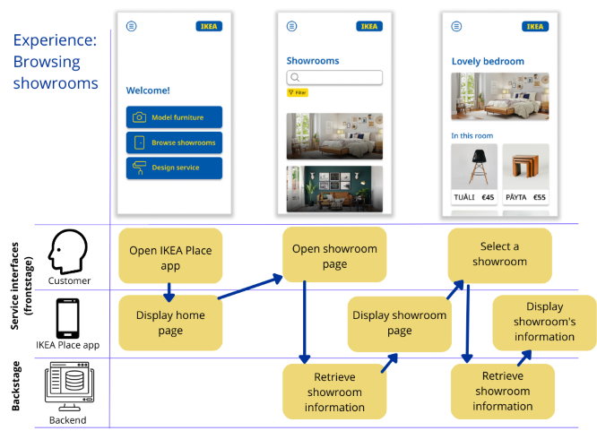
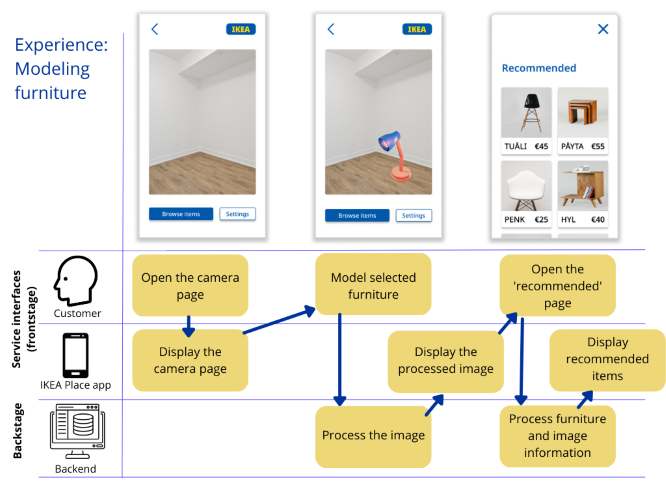

Furniture shopping at home with AR
In 2017, IKEA introduced the IKEA Place application that used AR technology to allow users to model furniture in their own homes, as described in the article 'Service innovation: Using augmented reality in the IKEA Place app' by Selcen Ozturkcan in 2021. In 2022, while studying digital service design, I set out to develop my own idea for IKEA Place 2.0 app. This project showcases my service design knowledge while also demostrating my UI/UX design skills.
Conceptualising IKEA Place 2.0
Historically, in the field of innovation and marketing, goods-dominant view has been central (Vargo & Lusch, 2004). Goods-dominant view emphasises the exchange of manufactured, tangible goods and discrete transactions. However, this view has recently been challenged by another way to see things: a service dominant logic. Instead of focusing on tangible output, service-dominant logic focuses on intangibility, exchange processes, and relationships (Vargo & Lusch, 2004). While goods-dominant view states that value is created by the provider in the form of a good, service-dominant logic states that value is created between the provider and customer (Michel et al., 2008).
It seems that IKEA – a major furniture retailer in the world today – is one of the companies that has managed to use service-dominant logic to their advantage, especially by understanding their customers and the usual struggles involved in the furniture shopping process (Ozturkcan, 2021). One example of this understanding is the IKEA Place app that helps customers easily model furniture in their own home. The IKEA Place app has been mostly well received and quite popular (Ozturkcan, 2021). It seems that the choice of platform has been a good one. Mobile phones are nowadays a commodity to many and the evolution of technology has allowed them to become a platform for many modern innovations (Tuunainen & Tuunanen, 2011). IKEA is mostly known for its physical platforms – IKEA stores – but this idea to integrate digital platforms to the IKEA service ecosystem clearly has a lot of potential.
I think that the IKEA Place is off to a great start but its concept can be developed further. In my concept, I want to take into account two possible developments:
- Enhancing the value co-creation: The current version of the app has a rather limited set of features: modelling one or more furniture by using AR technology and saving items to a wishlist. Understanding the user's needs is important in service-dominant logic. I propose that we should further consider different user groups and what would support them, and develop new features that would create a more rewarding experience and therefore support value co-creation. I think that the service currently works for the people who quickly want to test how the furniture would look – although some have found the current app hard to use (Ozturkcan, 2021). However, it doesn’t take into account the many people who are more passionate about interior design and who would benefit from a more diverse set of tools designed to help them find the perfect style for their homes.
- Bringing together the best of both worlds: IKEA stores cannot be found in every city and I personally wish that I could access some of the physical services. I think that we should consider how we could adapt some of the services offered in the physical platforms to the digital IKEA Place app. This would be especially valuable to customers like me who don't live near an IKEA store.
Using IISIn model
IISIn model is based on the view that ICT enabled service innovations have three important factors: organisation, technology and market environment (Tuunainen & Tuunanen, 2011). In the case of IKEA Place, the organisation we are considering is IKEA. Technology factors include the app and the technology it uses – AR-technology being in the focus. It's important to remember that technology can act as an important operant resource in service ecosystems which makes it an important factor in value co-creation (Akaka & Vargo, 2014). Market environment consists of the customers – people looking for furniture and other home decor – and competition, in IKEA's case other big RTA furniture retailers, for example Target (Ozturkcan, 2021).
ICT intensive service innovations have three dimensions: service concept, client interface and delivery system (Tuunainen & Tuunanen, 2011). Service concept describes the value propositions. Client interface describes the interface between the provider and customer. Delivery system describes electronic delivery of services.
I'll describe my idea for IKEA Place by using these dimensions. Let's first look at the customer side. In the service concept dimension, I first propose more tools that support decorating. These include better interaction with the AR models (e.g. possibility to open the doors of a cabinet) and furniture suggestions based on viewed furniture and color schemes. These changes are based on AR technology and machine learning. I would also suggest linking IKEA Place to IKEA's online store for faster purchasing. Since some people have found using the app hard, I would suggest looking at the UI and making sure that clear instructions can be found. In 'Conceptualising IKEA Place 2.0', I described that I want to bring some elements from the physical stores to the app. IKEA stores have many decorated showrooms that can give inspiration to the customers. I would suggest creating a virtual showroom page, where the stores can submit panorama pictures from the showrooms which the app users can then view for inspiration. Lastly, a big update I would suggest is offering IKEA design service through the app. The big changes in the client interface consist of adding more interaction between users and different IKEA platforms: a link to the online shop and a link to the design services. The service delivery is still the same, through the downloadable IKEA Place app.
For the provider, IKEA, service delivery and client interface are mostly the same as for the customer, although in the client interface IKEA can access the customers' data (e.g. what furniture they modelled and ended up buying) which helps with the development of the recommendation functions. In the service concept dimension, a major value proposition for IKEA is that through my idea for the IKEA Place, they can use innovative technologies (e.g. machine learning, machine vision) and develop ones that are currently being used (AR). This helps to set IKEA apart from its competitors as an innovative, progressive company.
Modularization and IKEA Place 2.0
Next, let's look at my IKEA Place concept through modularization. Considering modularity is important since its three main purposes – making complexity manageable, enabling parallel work and improvement, and creating adaptivity – might be valuable in a service-focused view (Tuunanen et al., 2012; Baldwin & Clark, 2000). Service modularity consists of three key aspects: service module, service architecture, and service experience (Tuunanen et al., 2012). Service module refers to a collection of service components that offer a precise functionality. Service architecture refers to the structure of the service. Service experience refers to the outcome of interaction between users and the service provider where users' needs are met. Each of the aspects consists of several constructs (Tuunanen et al., 2012). Next, I will discuss my idea considering the ones that are the most relevant in this case.
In the service module category, I'd like to focus on reuse. IKEA Place already has two major features: AR furniture modelling and wishlist. I will keep these features in the new version, although in my plan I have made little revisions to the AR tool (e.g. adding more interaction). Therefore, I will be reusing these old modules. Because AR technology is still quite unfamiliar to many and IKEA Place has received some comments about being hard to use, I would consider the app as a service with high task complexity. According to Tuunanen and Cassab (2011), a service extension that uses modular reuse has greater likelihood of trial than one that uses modular variation when the base service has high task complexity. Therefore, I think that reusing some components is smart in this case. Because I'm proposing many new features and therefore adding new components, I think it's good that the old users still have something familiar in the service.
In the service architecture category, I think it's important to focus on interfaces. Interfaces define the interaction between different service modules (Tuunanen et al., 2012). Since I will be adding some new features, it's important to keep in mind how the new components connect to the old components. Some of the components can be viewed as quite separate but some link more closely to the old components (e.g. AR furniture fitting and the new recommendation tool). I would argue that linking some components more closely together would support value creation by making the app supportive to the furniture modeling process. My logic behind this will be demonstrated in section 'Using MINDS method'.
In the service experience category, I'd like to focus on the concept of personalization. It's desirable that the users can personalize the service preferences in order to achieve flexibility and customization for different customers (Tuunanen et al., 2012). In my IKEA Place concept, I take into consideration the needs of different kinds of users and what would support their experience in the app. Based on this, I created the ideas for new features that would be beneficial for different users'. Out of these features the users can choose ones that cater to their current needs. I will discuss my thoughts about different user groups more in section 'Value co-creation and co-destruction in IKEA Place 2.0'.
This concept for IKEA place is also based on the view of Yoo et al. (2010) on layered modular architecture. According to Yoo et al. (2010) layered modular architecture makes it possible that a digitalized product can be simultaneously a product and a platform. One strength of layered modular architecture is its generativity: it can bring together unexpected components from different design layers (Yoo et al., 2010). The components can be used in unexpected ways. This was an inspiration for me when conceptualising the new IKEA Place. My goal was to give a set of tools to the customer which they can use in an innovative way that fits them.
Value co-creation and co-destruction in IKEA Place 2.0
An important concept in service-dominant logic is value co-creation that happens by both the service provider and customers. However, when looking at services it's also important to consider the opposite: value co-destruction. Value co-destruction can be defined as accidental or intentional resource misuse that leads to the decreased well-being of at least one of the actors involved in the service (Lintula et al., 2018). Next I'll discuss value co-creation and co-destruction in the current IKEA Place app and in the 2.0 version. In order to do this, I have identified and formed three user groups based on my own experiences. I have created example users based on the three groups, described in the following table:
| User groups | Example user | Reason for downloading the app | Values |
|---|---|---|---|
| The in-and-out customer | Victoria, 40 years old | Noticed a nice-looking sofa in an IKEA ad and wants to try it out. | Quick and easy service interaction |
| The DIY designer | Christian, 22 years old | Wants to change up the look of his bedroom. Is passionate about interior design and wants to look for different ideas. | Tools that support his brainstorming process and creativity |
| The designer seeker | Lucy, 35 years old | Has bought a new house and needs to design her new kitchen. Doesn’t like designing and is happy to pay for extra help. | An all-inclusive design service experience |
In my opinion the old IKEA Place co-creates value quite well with those users, who simply want to try out new furniture quickly. I named this group “the in-and-out customer”. However, there also seems to occur some value co-destruction, since IKEA Place had received some complaints about being hard to use.
I think that the current version fails to see that many people want more than just a quick fitting tool. Many people are looking for inspiration or big changes to their home decor. Searching for and trying out different furniture in the current version doesn't offer these things. User groups 2 and 3 (“the DIY designer” and “the designer seeker”) consist of the usual customers that aren't currently being catered to and who therefore experience value co-destruction. The DIY designers are characterised by passion for home decor and idea-seeking while the designer seekers are the people who can't or don't want to do home decor themselves and are looking for help with the process.
My concept for IKEA Place is able to address and fix current problems with value co-destruction. The in-and-out customers are still able to quickly model a piece of furniture just like before. Their progress is made even faster by linking IKEA online store to the app, so that the app directs them to the store if they want to purchase the furniture. Clear instructions help with the technology.
In the Place 2.0, the DIY designers' value creation is supported by the virtual showroom tool that allows them to browse different styles and find inspiration. The value co-creation is also supported by the recommendation tools that helps the user find items that match their style.
For the designer seekers, IKEA Place 2.0 offers a design service through the app. According to my research, IKEA already has some designer services, and my idea is to link them to the app. The user can buy a design plan from a designer. While buying the service, the user can submit information about what items/showrooms they have looked at in the app in order to give the designer an idea about their taste. This is valuable to the people who are looking for proper designer help.
Using MINDS method
The Management and Interaction Design for Service -method (MINDS method) was developed by Grenha Teixeira et al. (2017) for designing services. MINDS is based on the design science research approach (DSR) and it takes into account both management and interaction design perspectives. MINDS consists of three levels: designing the service concept, designing the service system and designing the service encounter. Following examples provided by Grenha Teixeira et al. (2017), I designed three diagrams that address these concepts in the context of the IKEA Place app. It's important to note that the example services design processes described by Grenha Teixeira et al. (2017) involved interviews or qualitative studies with the people that were part of the service. My service design is based on my previous knowledge and experiences, but I acknowledge that gathering as much information from the relevant people before designing the service is an important factor in the process.
Service concept is designed by using a customer value constellation and affinity diagram. My service concept figure for IKEA Place describes how different actors, that are relevant in the service, are linked together in the new concept. The ultimate activity, that is supported through the IKEA Place service, is browsing and testing furniture at home. Most notable changes are adding IKEA stores to the service through virtual showrooms and the option for increased interaction between the customer and IKEA employees through the design service.
![The service concept I created. Different actors I identified are IKEA organization, IKEA online store, IKEA customers, IKEA Place app, IKEA stores, and IKEA employee's. Activities for IKEA customers include browsing showrooms, taking pictures, browsing furnitures, saving to wishlist, testing AR furniture, buying furniture, and buying design services. Activities for IKEA employees include accessing design service requests and providing design services. Activities for IKEA stores include submitting showroom pictures. Activities for IKEA place app include collecting user data and displaying instructions. Activities for IKEA organization include Accessing user data. Activities for IKEA online store include providing furniture buying.](../kuvat/ar/serviceconcept.png)
Service system description consists of storyboard and service system navigation. The storyboard provides an illustrative customer journey while the system navigation offers a more systematic view into the process (Grenha Teixeira et al., 2017).

In my service system description I describe the new IKEA place system through a scenario involving an example customer, Tom. In the old IKEA place, many of the steps wouldn't be possible, and the experience would consist mostly of just modeling furniture. In the new IKEA place, Tom is capable of first looking for inspiration in an easy way by looking at the virtual showroom pictures. When he is modeling furniture, he can find more inspiration through the recommendation tool and then easily proceed to buy the items he wants.
The service encounter description consists of UX sketches and a service experience blueprint. The sketches provide detailed examples of customer's interaction with the service while the service blueprint describes frontstage and backstage operations (Grenha Teixeira et al., 2017).
I chose two relevant experiences: browsing showrooms and modeling furniture. The showroom page isn't in the old version, and my goal is to visualize through its service experience description how the customer can easily find inspiration for their own home in a valuable way.
The image below describes the service experience of modeling furniture. This was possible in the old version of the app, but my goal is to visualize how value creation is enhanced in the new modeling tool, where customers can get a more supportive modeling experience through the recommendation tool that offers them relevant suggestions.
References
Akaka, M. A., & Vargo, S. L. (2014). Technology as an operant resource in service (eco) systems. Information Systems and e-business Management, 12(3), 367-384.
Baldwin, C. Y., Clark, K. B., & Clark, K. B. (2000). Design rules: The power of modularity (Vol. 1). MIT press.
Lintula, J., Tuunanen, T., Salo, M., & Myers, M. D. (2018). When Value Co-Creation Turns to Co-Destruction: Users' Experiences of Augmented Reality Mobile Games. In International Conference on Information Systems. Association for Information Systems (AIS).
Michel, S., Brown, S. W., & Gallan, A. S. (2008). Service-logic innovations: how to innovate customers, not products. California management review, 50(3), 49-65.
Ozturkcan, S. (2021). Service innovation: Using augmented reality in the IKEA Place app. Journal of Information Technology Teaching Cases, 11(1), 8-13.
Grenha Teixeira, J., Patrício, L., Huang, K. H., Fisk, R. P., Nóbrega, L., & Constantine, L. (2017). The MINDS method: integrating management and interaction design perspectives for service design. Journal of Service Research, 20(3), 240-258.
Tuunainen, V. K., & Tuunanen, T. (2011, January). IISIn-A model for analyzing ICT Intensive Service Innovations in n-sided Markets. In 2011 44th Hawaii International Conference on System Sciences (pp. 1-10). IEEE.
Tuunanen, T., Bask, A., & Merisalo-Rantanen, H. (2012). Typology for modular service design: review of literature. International Journal of Service Science, Management, Engineering, and Technology (IJSSMET), 3(3), 99-112.
Tuunanen, T., & Cassab, H. (2011). Service process modularization: reuse versus variation in service extensions. Journal of Service Research, 14(3), 340-354.
Vargo, S. L., & Lusch, R. F. (2004). Evolving to a new dominant logic for marketing. Journal of marketing, 68(1), 1-17.
Yoo, Y., Henfridsson, O., & Lyytinen, K. (2010). Research commentary—the new organizing logic of digital innovation: an agenda for information systems research. Information systems research, 21(4), 724-735.